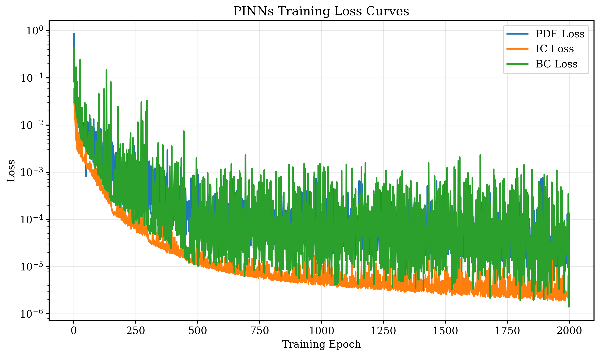

PINNs for the Allen-Cahn Equation
This project uses physics-informed neural networks to solve the one-dimensional Allen-Cahn initial-boundary value problem. The aim is to learn the full space-time solution directly from the PDE residual together with initial and boundary constraints, then compare that learned surrogate against a classical numerical reference. In practice, the work is structured like a compact modeling pipeline: define the architecture, design the loss, choose a sampling strategy, train under a scheduler, and benchmark the result on a dense evaluation grid.
Main result: after 2000 training epochs, the PINNs solution agrees well with the spectral benchmark, with reported MAE \(1.04\times 10^{-1}\), RMSE \(2.70\times 10^{-1}\), no NaN values on the evaluation grid, and a predicted range of \([-1.006, 1.003]\).
Equation and Boundary Conditions
The Allen-Cahn equation is a canonical model for interface motion and phase separation. In this project I solve
\[ \frac{\partial u}{\partial t}=\epsilon^2\frac{\partial^2 u}{\partial x^2}+u-u^3, \qquad \epsilon=0.1, \]
on the domain \(x\in[-1,1]\), \(t\in[0,1]\), together with the initial profile
\[ u(0,x)=\tanh\left(\frac{x}{\sqrt{2}\epsilon}\right), \]
and homogeneous Neumann boundary conditions
\[ \frac{\partial u}{\partial x}(t,-1)=\frac{\partial u}{\partial x}(t,1)=0. \]
PINNs Architecture and Loss
The neural model \(\mathcal{N}(t,x;\theta)\) is a five-layer fully connected network with 100 neurons per layer and \(\tanh\) activations. The network takes a space-time coordinate pair \((t,x)\) as input and returns the predicted value \(u(t,x)\). This keeps the architecture simple enough to train reliably while still expressive enough to model a nonlinear interface evolution problem.
The loss combines three physics-informed components:
\[ \mathcal{L}(\theta)=\mathcal{L}_{\mathrm{PDE}}(\theta)+10\mathcal{L}_{\mathrm{IC}}(\theta)+\mathcal{L}_{\mathrm{BC}}(\theta). \]
\[ \mathcal{L}_{\mathrm{PDE}} =\frac{1}{N_{\mathrm{PDE}}}\sum_{j=1}^{N_{\mathrm{PDE}}} \left\| \frac{\partial u}{\partial t} -\epsilon^2\frac{\partial^2 u}{\partial x^2} -u+u^3 \right\|^2, \]
\[ \mathcal{L}_{\mathrm{IC}} =\frac{1}{N_{\mathrm{IC}}}\sum_{j=1}^{N_{\mathrm{IC}}} \left\| u(0,x_j)-\tanh\left(\frac{x_j}{\sqrt{2}\epsilon}\right) \right\|^2, \]
\[ \mathcal{L}_{\mathrm{BC}} =\frac{1}{N_{\mathrm{BC}}}\sum_{j=1}^{N_{\mathrm{BC}}} \left( \left\|\frac{\partial u}{\partial x}(t_j,-1)\right\|^2 + \left\|\frac{\partial u}{\partial x}(t_j,1)\right\|^2 \right). \]
The factor of 10 on the initial-condition term puts additional emphasis on matching the sharp hyperbolic tangent interface at \(t=0\), which is important for obtaining a reasonable later-time solution.
Training Protocol
The model is trained using 20,000 interior collocation points sampled by Latin Hypercube sampling, together with 50 initial-condition points and 50 boundary-condition points. Optimization runs for 2000 epochs with Adam starting from learning rate \(10^{-3}\). A multi-step scheduler multiplies the learning rate by 0.5 at epochs 150, 300, and 450, and then keeps it fixed.
This setup reflects a standard continuous-time PINNs workflow: enforce the PDE everywhere in the domain through automatic differentiation, fit the initial condition at \(t=0\), and penalize boundary derivative violations at the endpoints. Framed another way, the project is about turning a PDE into a trainable supervised-style optimization problem without requiring labeled solution data at interior points.

Training loss curves for the PDE residual, the initial-condition error, and the boundary-condition error over 2000 epochs.
Comparison Against the Numerical Reference
After training, I compare the neural solution against a spectral reference defined on a dense grid with 256 spatial points and 1001 time levels, for a total of 256,256 evaluated space-time locations. This gives a proper held-out benchmark rather than relying only on optimization curves. The final error statistics show solid agreement:
- MAE \(=1.04\times 10^{-1}\)
- RMSE \(=2.70\times 10^{-1}\)
- All 256,256 evaluation points are valid, with no NaN values
- PINNs range: \([-1.006, 1.003]\)
- Spectral reference range: \([-1.028, 1.028]\)
These numbers indicate that the learned model reproduces the dominant phase-separation structure well. The network preserves the expected two-phase behavior with smooth transitions between values near \(u=\pm 1\), while remaining numerically stable across the full evaluation domain. In particular, the absence of NaNs across the full grid is a simple but important sanity check on inference stability.

Comparison of the spectral reference, the PINNs prediction, and the absolute error over the full space-time grid.

Time-slice comparisons at \(t=0.1\) and \(t=0.9\). The PINNs solution tracks the reference closely, with slightly wider transition zones.
Interpretation
The heatmaps show that both methods capture the same large-scale dynamics: a sharp initial interface gradually evolves into a smooth phase-separated profile. The time-slice comparisons make the remaining discrepancy clearer. The PINNs solution is slightly smoother than the reference, especially near steep transitions, which is a common behavior in neural PDE surrogates when trained with a finite set of collocation points and a relatively compact network.
From a computational standpoint, the PINNs approach is more expensive during training than the numerical reference solver. Its advantage appears after training, since the network can be evaluated at arbitrary query points without rerunning a PDE solve. That makes it attractive as a reusable inference model, while the benchmarked error metrics and visualization pipeline provide a straightforward way to judge whether that reuse is justified.
Back to Projects